Live: merged to main (PR #750, ce833dfc).
21 Oct 2026. Star career navigation, round 1 (4 steps), and Admin Marketing slice 1. In Admin → Patch notes this is v0.104h.
Phone, Owner, Back landed on Home, not the Phone. Sponsors, Casino, Trophies and Achievements did the same.
Each screen sent Back to Home. It did not remember where you came from. There were also 8 different Back controls (Back, Home, a round arrow, a bar button, Menu, Close phone and more).
A screen opened from the Phone, Relations, Stats, the Shop rail or the gear remembers where it came from (navReturn). One shared Back control replaces the 8 variants. Going to a Phone place and back to the Phone takes 3 taps, was 4. The Old UI is untouched.
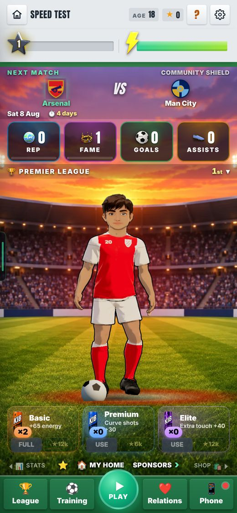
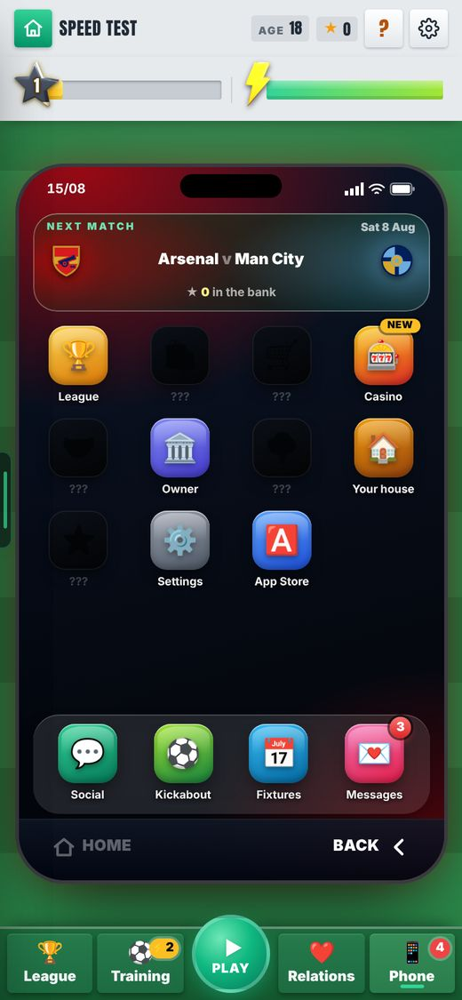
Nothing told you something was waiting: one red dot on the Phone, a small count on Sponsors, nothing on Training, Relations or League.
The game knew (training sessions left, unread phone, boss talk, sponsor offers, match today) but only showed some of it.
The bar shows a number or a dot on the right button: Training shows sessions left, Phone shows unread messages plus new apps. Home shows one chip, most urgent first, with +N for the rest. The old End of Season card is now the top chip. Every tutorial pointer name is unchanged.
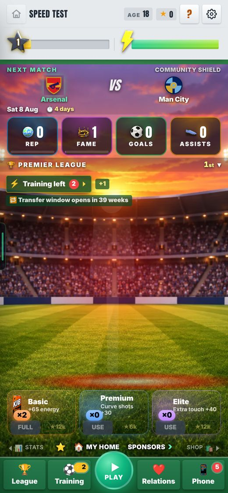
On Home the house icon opened the main menu, but everywhere else it went Home.
One icon with two meanings.
It is dimmed and does nothing on Home. The main menu stays under Settings. Cost: the main menu and Hall of Fame go from 2 taps to 3 (gear, Main menu, item).
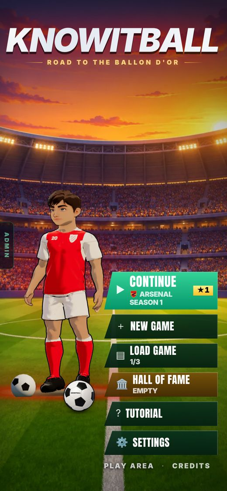
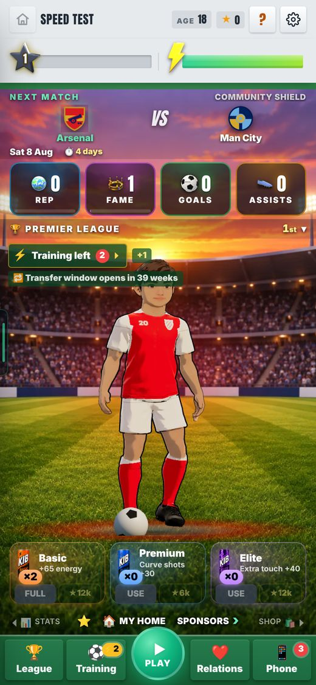
Stats had 6 views hidden behind swipes and tiny arrows. Career overview took 4 taps, the Trophy cabinet 3.
The views were pages beside Home, not a visible list.
One row: Season (Status folded in), Career (All seasons and Country), Records, Trophies (the cabinet, now inside Stats) and Contract.
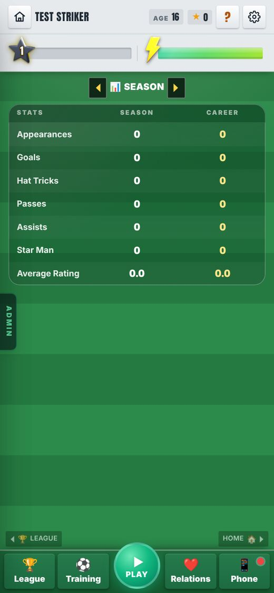
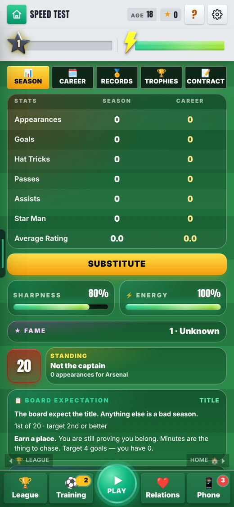
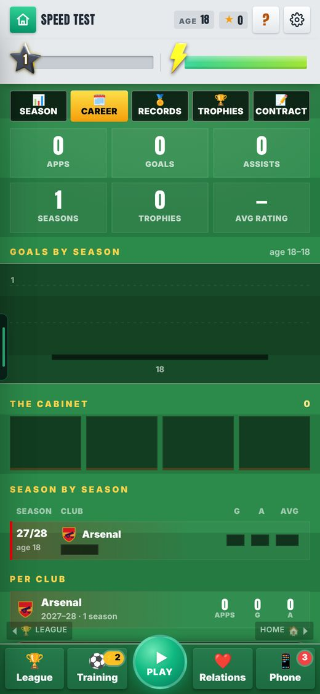
Transfers has no door during the season, so there was no hint when you could move.
You can only move in the summer window (18 Oct rule). The game never said how far away it was.
Home shows "Transfer window opens in N weeks". Transfers still has no door on purpose.
The research asked to trim the Phone (14 apps, 3 of them copies of League, Fixtures and Settings).
Harry: "I wouldn't get rid of the phone stuff. We'll have stuff slowly unlock on the phone."
Every app stays. An app added from the App Store wears a yellow NEW tag until you first open it, and counts on the Phone button. Starter apps and old saves show nothing new.
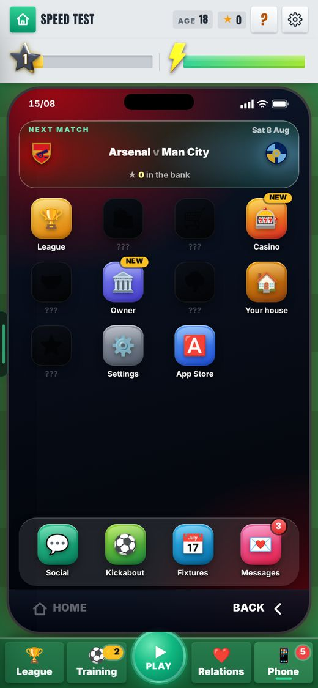
No one could see where each Knowitball video was (script, being made, posted).
Video work lived in chats and files.
Admin, Marketing, Board shows seven steps: Idea, Script, Script OK, Making, In edit, Final check, Posted. It reads marketing/board.json. The first card, v01 (patch notes 0.1 to 0.3, 44.7 s), is in Posted, with its Script, Cover and Video links. The video-board skill moves a card every time a video starts, moves or finishes.
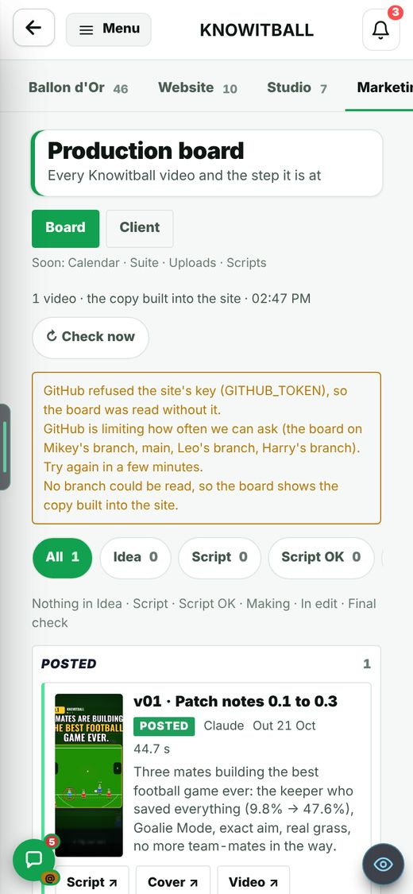
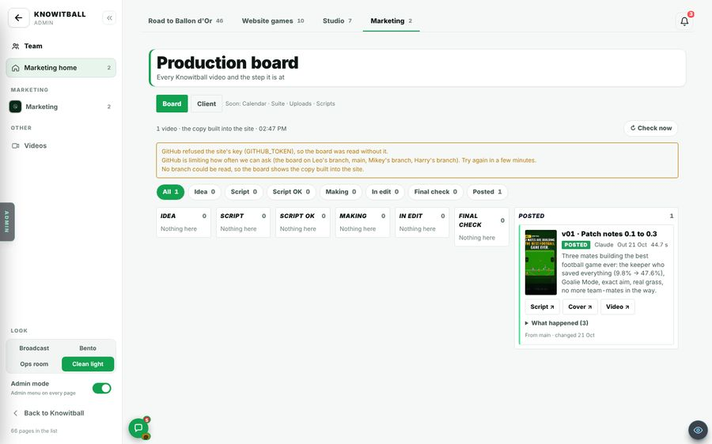
What Knowitball is, who it is for and how it sounds was spread across notes.
Anything we make for marketing needs one place to check against.
The Client tab is built from 13 client-kib Brain notes. The audience note is marked "To confirm" for Harry.
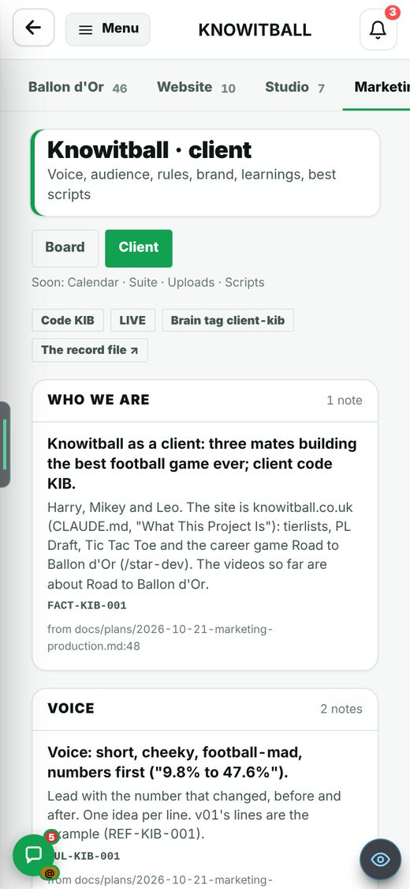
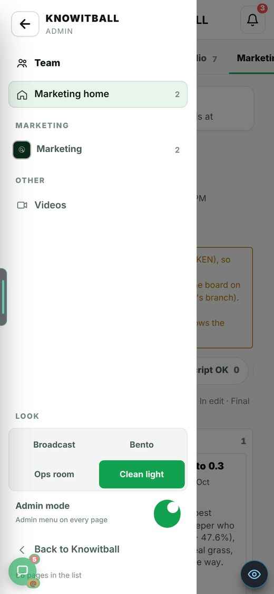
A client or private name could end up in public code or notes.
Marketing notes name real clients, and the site is public.
The build now checks for private names and fails if one appears where it should not.
A card moves only when marketing/board.json changes on a branch and the site reads it (within a minute or two).
By design for slice 1. Not changed.
The menu shows "Soon: Calendar, Suite, Uploads, Scripts".
Next round (R2).
In the test stills the board says GitHub refused the site's key (GITHUB_TOKEN) and shows the copy built into the site.
Not checked on the live site. The fallback works as shown: v01 still appears.
You cannot open Transfers outside the summer window.
On purpose (Decision 4 of the research). Not changed.
All stills are 390x844 browser captures.
No real device was used.